1. Bhangarh Fort, Rajasthan – A Rejected Lover’s Revenge
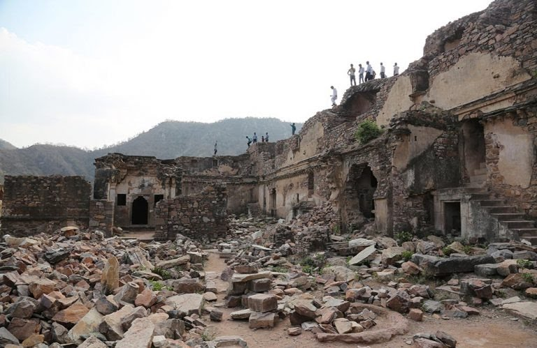
2. Savoy Hotel, Mussoorie – Murder by Poisoning
3. Delhi Cantonment, Delhi – Apparition Roaming the Streets in White Saree
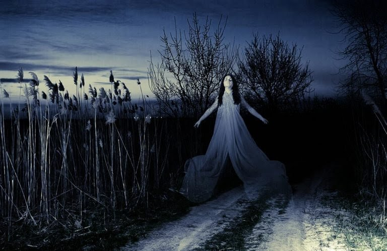
4. Agrasen Ki Baoli, Delhi – Black Water Calls you to Jump
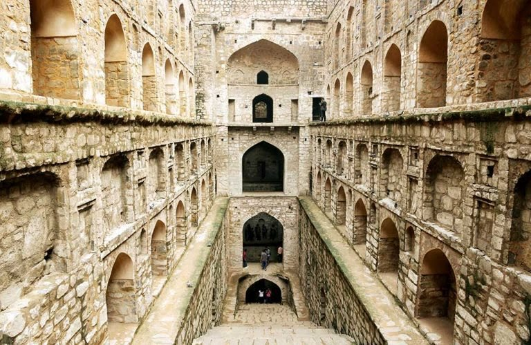
5. Malcha Mahal, Delhi – Suicide of a Princess by Drinking Crushed Diamonds
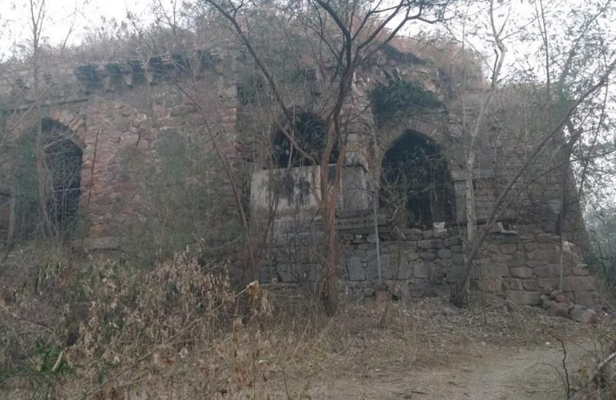
6. Dumas Beach, Surat – Whispers of Ghosts Pervading the Winds
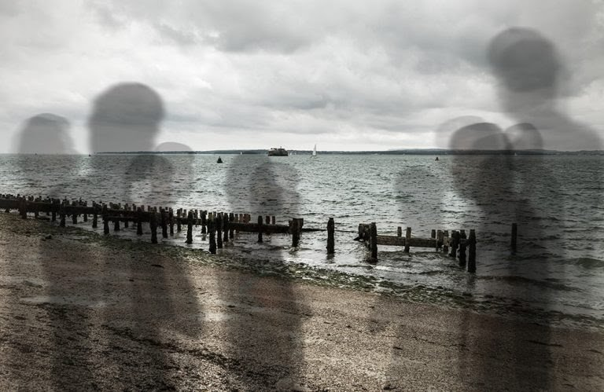
7 .D’Souza Chawl, Mumbai – Of a Woman who Fell into a Well to Her Death
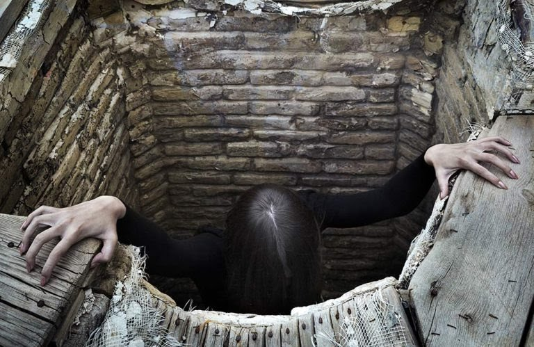
8. Shaniwar Wada Fort, Pune – The Brutal Murder of a Prince
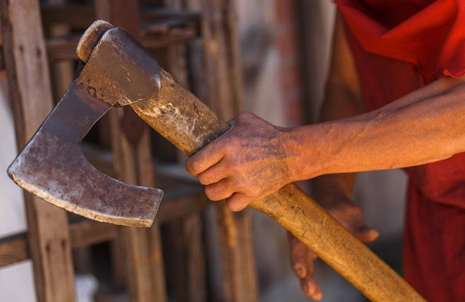
9. Ramoji Film City, Hyderabad – Spirits of a Dead Soldiers still Roam Around
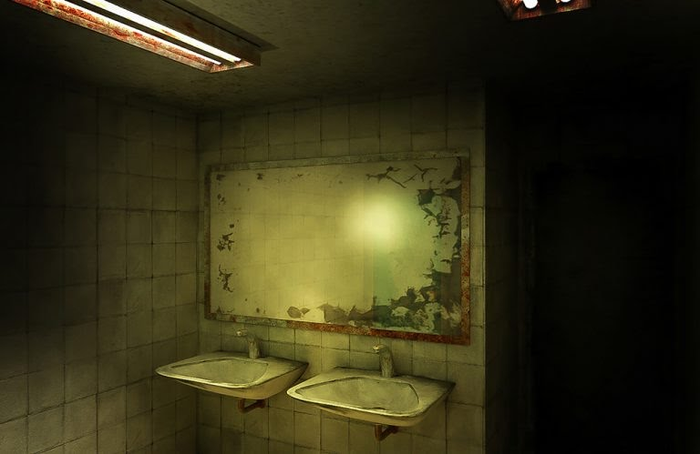
10. Vas Villa, Bangalore – Tale of a Sister’s Brutal Murder
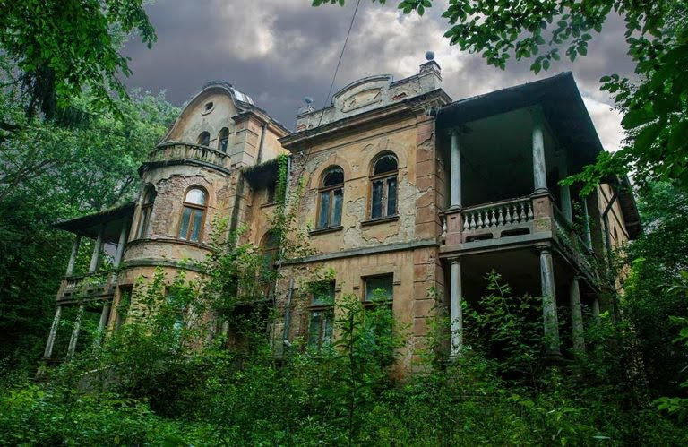
11. Writer’s Building, Kolkata – In the Fight for Freedom Struggle
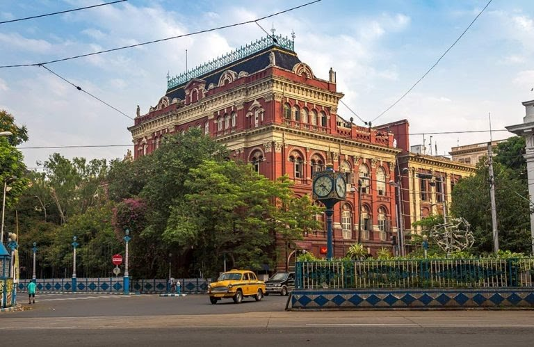
12. Fern Hill Palace, Ooty – The Raaz of the Hotel where Raaz was Filmed
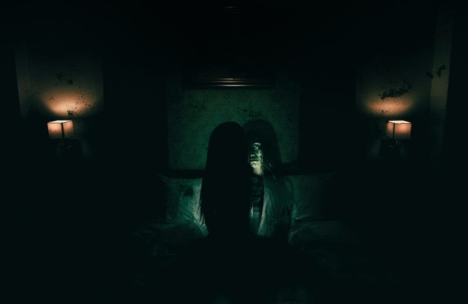
13. South Park Street Cemetery, Kolkata – Ghosts of Soldiers of the Past
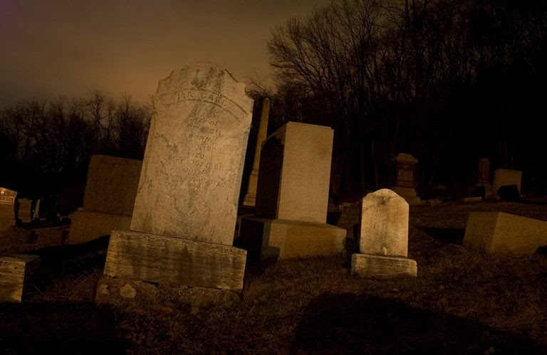